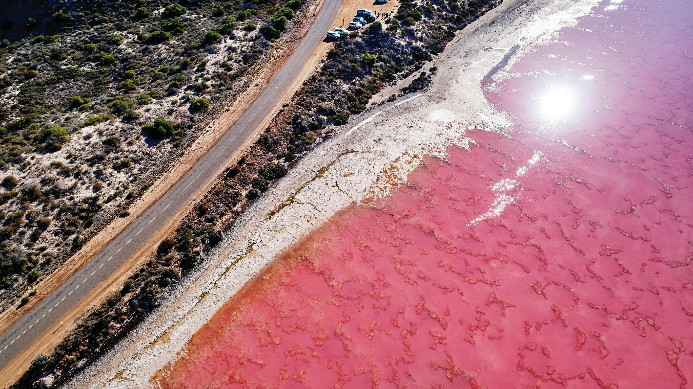

北線人氣之選
粉紅湖・卡爾巴里三日遊
一次走過粉紅湖、卡爾巴里峽谷、自然之窗與尖峰石陣，附粉紅湖航拍。

從一日到一段公路旅程
以下價格及班期以現時網上產品為參考；季節、天氣與成團安排或會調整，預訂前由團隊再次確認。
北線人氣之選
一次走過粉紅湖、卡爾巴里峽谷、自然之窗與尖峰石陣，附粉紅湖航拍。
航拍相片體驗
朝早由珀斯出發，一日直達赫特潟湖，沿途串連 Jurien Bay 與 Geraldton 海岸。
西澳經典地貌
走進金色沙漠石柱群，再到 Cervantes 感受龍蝦漁港與 Lancelin 白沙丘。
穿越小麥帶
穿過 Avon Valley 與小麥帶，走訪約克古鎮、波浪岩、河馬哈欠石及原住民岩洞。
印度洋藍色路線
乘棧橋小火車越過碧藍海面，配合西南部海岸、小鎮與季節花田。
地底鐘乳石世界
走入 Leeuwin-Naturaliste 地底洞穴，再遊覽西南森林、海岸與特色小鎮。
每日出發・海島慢遊
由珀斯接送到碼頭，搭船登島，留時間畀你自己搵海灘、睇 quokka 同探索鹽湖。
兩日濃縮北線
尖峰石陣、龍蝦小鎮、Hutt Lagoon、卡爾巴里自然之窗及蘭斯林滑沙一次連貫。
西澳北線 Bucket List
Monkey Mia 海豚、Shark Bay 世界遺產、卡爾巴里、粉紅湖與尖峰石陣，一次完成西澳北線。
落機就有人接應
5、8、12 座車往返珀斯機場、市區酒店及指定地點，預先確認行李需要。
你定節奏，我哋帶路
按航班、同行成員與心水景點設計，適合家庭、朋友、商務及遊學團。
第一次來西澳，也可以玩得很深入
以珀斯為基地，將機場接送、酒店與散團按抵達日組合。你可以選擇粉紅湖北線、經典地標，或者較輕鬆嘅海岸節奏；行程會按航班、同行長者與小朋友需要再調整。
查詢行程每日出發唔代表每日都一樣
以下係現時按 YoYo Travel 網站資料整理嘅參考班期；座位、天氣及最低成團人數會再由西澳探奇確認。
熟路，先可以慢慢睇風景
熟悉西澳長途車程、季節光線與景點節奏，按當日情況安排更合適嘅停留。
售前查詢、酒店接送與旅程安排，都可以用廣東話、普通話或英語直接溝通。
重視車輛整潔、準時接送與旅客需要，家庭、朋友及小團體都可以更自在。
出發前，先知道幾樣嘢
將日期、人數、酒店或接送地點、心水景點同語言需要電郵畀我哋；如果係包車，再加埋航班及行李資料，團隊會先建議合適安排。
唔係。每條路線有固定參考班期，Rottnest Island 較彈性，其餘一日遊及多日遊按日期表安排；預訂前會再次確認。
要視乎路線。短途海岸及城市接送較容易安排；北線、多日遊車程較長，部分路段有階梯或崎嶇地面，請查詢時先講明同行成員需要。
卡片顯示係現時參考起價，包含項目會因路線而不同；門票、住宿、餐食、升級項目、司機過夜房及超時等會喺確認報價時列清楚。
你想去邊度？
團隊會按出發日、車程、接送地點同同行需要，建議散團、包車或套裝之中最合適嘅安排。